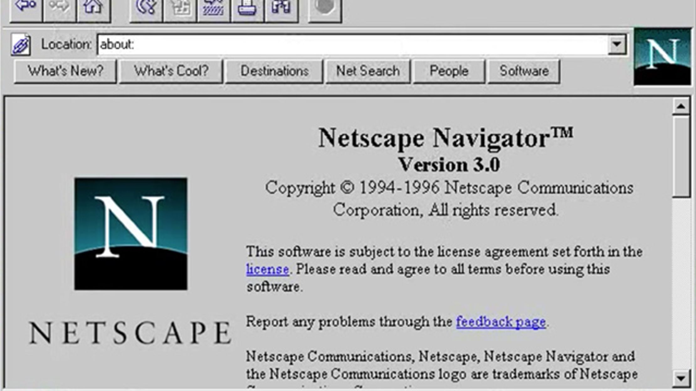

History of the Internet
What is the Internet?
The formal definition of the Internet is "a loosely-organized international collaboration of autonomous,
interconnected networks, supports host-to-host communication through voluntary adherence to open
protocols and procedures defined by Internet Standards." Arthur Hendela, a professor at NJIT, informally
defines it as "a collection of multiple different pieces of computer and non-computer equipment talking
to one another by means of a communications network either wired or wireless."
Types of Internet connections
Dial-up is the slowest type of connection; avoid it unless it's the only available
service in your area. It uses your phone line to connect; if you don't have multiple phone lines, you
cannot use your landline and the Internet at the same time.
DSL (Digital subscriber line) uses a broadband connection, and is faster
than dial-up internet. It connects via a phone line, but doesn't require you to have a landline. If you do
have a landline though, you can also use the Internet at the same time as the landline.
Cable is connected via cable television, but you don't need cable TV in
order to get it. It uses a broadband connection, which is must faster than the previous types. It is only
available where cable TV is available.
Satellite uses a broadband connection, doesn't require cable or phone lines,
and can be fast. It connects via satellites orbiting Earth. It can be used anywhere, but connection is
affectable by weather patterns. It is generally slower than DSL or cable.
3G and 4G is most common with mobile phones, and connects wirelessly through your ISP's
network. It's not as fast as DSL or cable, and is usually limited by the amount of data you can use through
it each month.
Internet-related devices
Modems makes connection with your ISP, and translates to/from digital
or light signals.
Routers directs signals to/from multiple computers tto multiple Internet
sites.
Switches connect different pieces of a network together, and adds ports
to router connections.
Firewalls are either hardware or software devices that filter traffic from the Internet
to your computer to screen for malicious programs.
A picture of the satellite Spudnik, a catalyst in the Space Race and the development of
computer networks.
Timeline of the Internet's History (20th Century)
-
Launching of Sputnik into orbit
-
Space exploration assigned to Advanced Research Projects Agency (ARPA)
-
NASA is created via Eisenhower executive order
-
First paper-on-packet switching theory, developed by Leonard Kleinrock
-
“Galactic Network Concept” created by J.C.R. Licklider
-
Two ARPANET sites in UCLA and Stanford Research Institute are connected
for the first time, headed by Larry Roberts
-
Bob Kahn demonstrates ARPANET at the International Computer Communication
Conference (ICCC)
-
Ray Tomlinson creates first basic email program, creating the “@” symbol
-
Protocols for packet network interconnection created by Vinton Cerf and
Ray Kahn
-
TCP and IP splits
-
The predecessor to the World Wide Web (www) created by Tim
Berners-Lee
-
Domain Name System (DNS) designed by Jon Postel, Paul Mockapedis, and
Craig Partridge
-
World Wide Web created by Tim Berners-Lee
-
First graphical web browser "Mosaic" developed by Marc Andreessen
-
Browsers wars of Microsoft v. Netscape

The interface of Netscape's second web browser called "Navigator". This browser
was incredibly popular before the release of Internet Explorer by Microsoft.